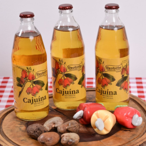
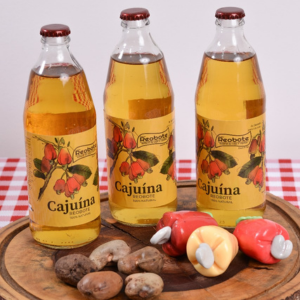
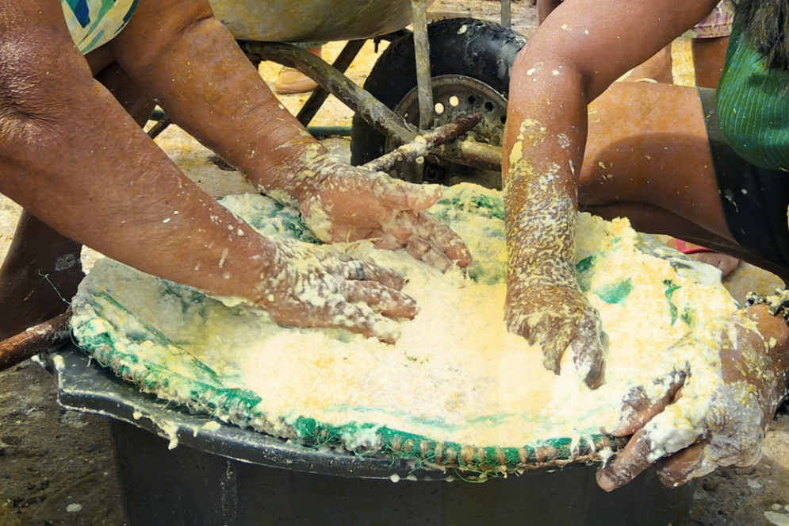
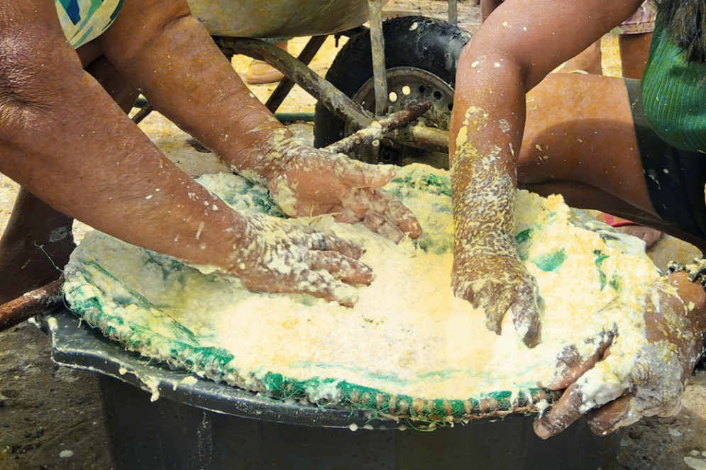

Cultura Cearense
A cultura do Ceará é rica e diversa, formada pela miscigenação de influências europeias (principalmente portuguesas), indígenas e africanas. As principais expressões incluem manifestações folclóricas como o maracatu, a literatura de cordel e o repente, além de festas como as quadrilhas juninas e o Carnaval. Outros destaques são o artesanato (rendas, cestaria, peças de couro e palha), a culinária (com base em frutos do mar, caju e mandioca) e a forte tradição de humoristas, artistas plásticos e cineastas. A música popular, especialmente o forró, é uma parte essencial da identidade cultural cearense.
Manifestações culturais e artísticas
- Música e dança: O maracatu, o coco e o forró são ritmos populares, enquanto festas juninas como as quadrilhas são um grande destaque.
- Literatura: O estado é berço de muitos escritores importantes e tem uma forte tradição na literatura de cordel e na xilogravura, com o cordel sendo reconhecido como Patrimônio Cultural Imaterial Brasileiro.
- Artes visuais: O Ceará é reconhecido por seus artistas plásticos e o desenvolvimento de movimentos artísticos, como a Padaria Espiritual e o Clã.
- Humor: O estado se destaca nacionalmente pela produção de humoristas.
- Artesanato: A produção local inclui rendas, cestaria, bordados, peças de couro, palha e bijuterias feitas com pedras semipreciosas e crochê.
Culinária
 

- A culinária cearense é baseada em frutos do mar, caju, castanha e mandioca.
- Pratos típicos incluem baião de dois, peixada cearense, caranguejo e cuscuz.
- A cajuína é uma bebida tradicional do estado.
Festividades
 

- Festas Juninas: Celebradas com quadrilhas, música e comidas típicas.
- Carnaval: Uma das festas tradicionais do estado.
- Festejos de colheita: Como a farinhada em Chaval, que celebra a mandioca e preserva a cultura ancestral.